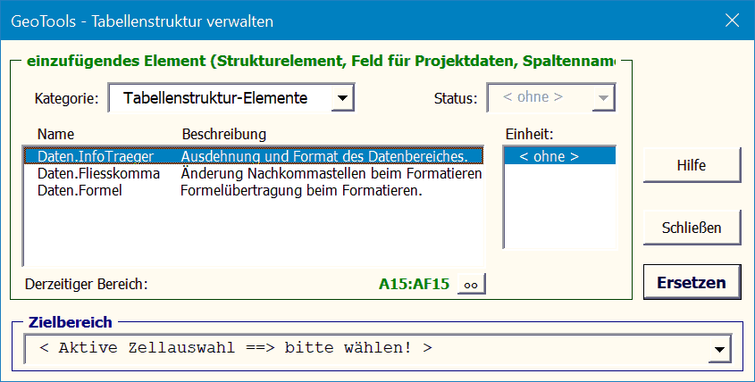
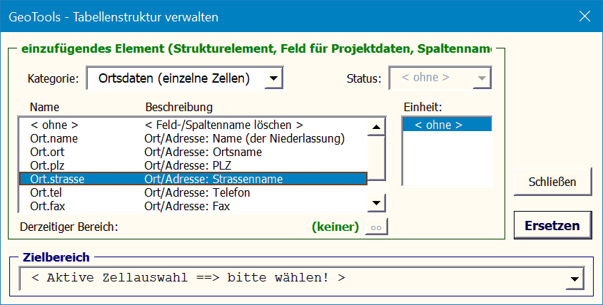

Der Dialog "Tabellenstruktur verwalten" ermöglicht das einfache Herstellen fast
der gesamten Tabellenstruktur (außer Felder für Extradaten).
1. Datenbereich
Die Liste enthält fest im Programmkode vereinbarte Struktur-Elemente.

2. Spaltennamen
Die Liste enthält alle
konfigurierten Spaltennamen. Bei physikalischen Größen ist
auf den Wertstatus zu achten (Ist, Soll, Fehler, Verbesserung).
3. Felder für Projektdaten
Die Liste enthält fest im Programmkode vereinbarte Projektdatenfelder.
4. Felder für Ortsdaten
Die Liste enthält alle Ortsdatenfelder, die beim Programmstart aus der ini-Datei
gelesen wurden (siehe Ortsdaten).

5. Felder für Extradaten
Felder für Extradaten werden manuell eingefügt, indem einer Zelle per Excel-Standardfunktioalität
ein Name zugewiesen wird (z.B. Formeln ->
Namensmanager).
Es ist darauf zu achten, dass der Zellbezug in der Form "='Tabelle_xxx'!$D$11"
angegeben wird, also den Tabellennamen enthält! Dies kann nachträglich erreicht
werden, indem die Tabelle innerhalb der Arbeitsmappe kopiert wird. Danach
sollten die originale Tabelle und alle globalen Namen gelöscht werden.